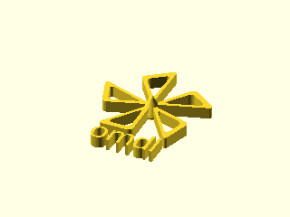

|
omdl
v0.5
OpenSCAD Mechanical Design Library
|
|
omdl
v0.5
OpenSCAD Mechanical Design Library
|
A collection of documented design primitives for OpenSCAD inspired by MCAD.
It is an OpenSCAD mechanical design library (omdl) that aims to offer open-source high-level design primitives with coherent documentation generated by Doxygen using openscad-amu.
With Doxygen, the code documentation is written within the code itself, and is thus easy to keep current. Moreover, it provides a standard way to both write and present OpenSCAD script documentation, compilable to multiple common output formats.
With omdl, all library primitives are parametric with minimal, mostly zero, global variable dependencies and all library API's include Doxygen markups that describe its parameters, behavior, and use. Validation scripts are used to check that the core building blocks work as expected across evolving OpenSCAD versions. These validation are performed automatically when rebuilding the documentation.
See the validation section for the results generated with this documentation.
The library components may be used or included as expected.
Example:
| Bottom | Diagonal | Right | Top |
|---|---|---|---|
 |  |  |  |
To use omdl the library files must be copied to one of the OpenSCAD Library Locations. This can be done manually, as described in the OpenSCAD documentation, or can be automated using openscad-amu.
The ladder is recommended and has several advantages. When using openscad-amu, the library reference documentation is installed together with the library source code. This reference documentation is also added to a browsable data-table of installed libraries, which facilitates design reference searches. Moreover, with openscad-amu installed, one can rebuild the omdl reference manual or develop documentation for new OpenSCAD designs.
Library release files are made available in the source repository in a sub-directory called snapshots.
More information on installing openscad-amu can be found published on Thingiverse and in the GitHib openscad-amu repository where the source is maintained.
A build script exists for Linux and Cygwin (pull requests for macos are welcome). If wget is not available, here is a downloadable link to the bootstrap script.
$ mkdir tmp && cd tmp
$ wget https://raw.githubusercontent.com/royasutton/openscad-amu/master/snapshots/bootstrap.{bash,conf} .
$ chmod +x bootstrap.bash
$ ./bootstrap.bash --yes --install
$ openscad-seam -v -VIf the last step reports the tool build version, then the install most likely completed successfully and the temporary directory created in the first step may be removed when desired.
Now the documentation for omdl can be compiled and installed with a single command. First download the source from Thingiverse or clone the source repository and install as follows:
$ git clone https://github.com/royasutton/omdl.git $ cd omdl $ make install
The library and documentation should now have been installed to the OpenSCAD built-in library location along with the reference manual that can be views with a web browser.
Have a look in:
Now you may include the desired library primitives in your project as follows, replacing the version number as needed (multiple version of a library may coexists):
include <omdl-v0.4/shapes2de.scad>; include <omdl-v0.4/shapes3d.scad>; ...
omdl uses git for development tracking, and is hosted on GitHub following the usual practice of forking and submitting pull requests to the source repository.
As it is released under the GNU Lesser General Public License, any file you change should bear your copyright notice alongside the original authors' copyright notices typically located at the top of each file.
Ideas, requests, comments, contributions, and constructive criticism are welcome.
In case you have any questions or would like to make feature requests, you can contact the maintainer of the project or file an issue.
 1.8.9.1
1.8.9.1